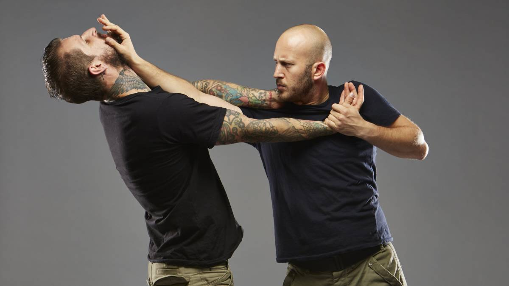
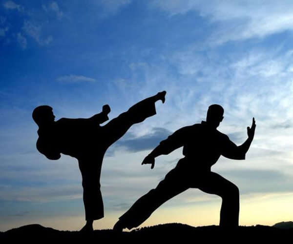

Présentation des différents styles
Self-Defense
La Self-Defense, ou défense personnelle est un moyen pour les pratiquants experts ou non de savoir comment réagir dans diverses situations de tous les jours en mettant hors d'état de nuire d'éventuels agresseurs. On y retrouve des styles qui sont souvent utilisés par les militaires. Dans la Self-Défense on utilise des frappes, des prises de soumitions ou d'étranglement. L’esprit de la Self-Défense est de pouvoir se protéger, mais toujours dans un esprit citoyen et sous couvert de la loi.
Arts Martiaux
Un art martial est un style ou une école dont l’enseignement porte principalement sur des techniques de combat, à mains nues et/ou avec arme. Historiquement, cet apprentissage intègre une dimension spirituelle et morale visant à la maîtrise de soi (essentielle, tant pour renoncer au combat s'il est évitable, que pour y faire face dans le cas contraire), et s’enrichit de multiples connaissances (culturelles, philosophiques et médicales, notamment). Ainsi, les arts martiaux visent au développement global de l’individu : externe (force, souplesse), interne (énergie, santé), intellectuel et moral.
Sport de Combat

Avant toute chose, il est important de définir ce qu’est un sport de combat. Il s’agit d’une forme de compétition dans laquelle deux participants ou combattants s’affrontent. En tant que sport, il est limité dans le temps, se passe sur une zone délimitée et obéit à certaines règles qu’un arbitre s’efforce de faire respecter. Il est notamment interdit de porter certains coups (frapper sous la ceinture, tirer les cheveux, etc.). Tandis que d’autres techniques sont privilégiées et attribuent des points permettant éventuellement de désigner le vainqueur. Sinon, le perdant est celui qui abandonne, sort du ring ou perd connaissance (KO). Il faut aussi souligner qu’un sport de combat vise à garantir un minimum l’intégrité physique des combattants. Ainsi, en plus d’interdire quelques coups selon sa nature, le sport de combat peut autoriser une certaine forme de protection. Par exemple : un protège-dents, protège-tibia, des gants, une coquille, casque, etc